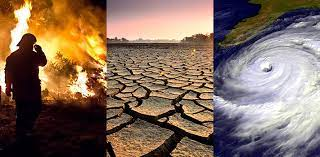
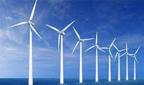
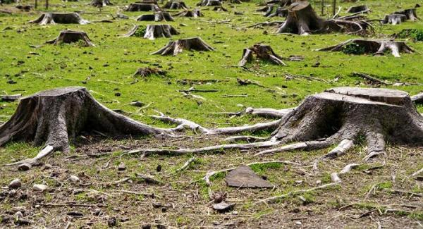
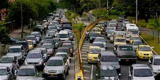
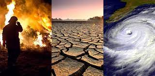
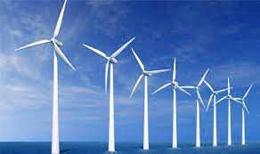
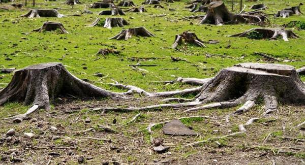
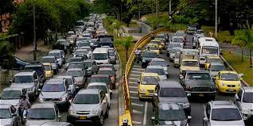

El Cambio Climático, un problema hecho por el hombre

¿Cuáles son las causas del cambio climático?
Hay variedades de causas, entre las más recurrentes estan:

La generación de energía:
La generación de electricidad y calor a través de los combustibles fósiles provoca una gran cantidad de emisiones globales.

Productos de fabricación:
La industria y las fábricas producen emisiones, en su mayoría provenientes de la quema de combustibles fósiles destinada a generar energía para la fabricación de cemento, hierro, acero, componentes electrónicos, ropa y otros bienes.
La tala de los bosques:
La tala de bosques a fin de crear granjas o pastos, o por otros motivos, provoca emisiones dado que cuando se talan sus árboles se libera el carbono que estos han estado almacenando.

El uso del transporte:
La mayoría de camiones, barcos y aeronaves funcionan con combustibles fósiles. Esto hace que el transporte sea uno de los sectores que más contribuyen a generar gases de efecto invernadero, especialmente en lo que a emisiones de dióxido de carbono se refiere.

Hay variedades de causas, entre las más recurrentes estan:

La generación de electricidad y calor a través de los combustibles fósiles provoca una gran cantidad de emisiones globales.

La industria y las fábricas producen emisiones, en su mayoría provenientes de la quema de combustibles fósiles destinada a generar energía para la fabricación de cemento, hierro, acero, componentes electrónicos, ropa y otros bienes.
La tala de bosques a fin de crear granjas o pastos, o por otros motivos, provoca emisiones dado que cuando se talan sus árboles se libera el carbono que estos han estado almacenando.

La mayoría de camiones, barcos y aeronaves funcionan con combustibles fósiles. Esto hace que el transporte sea uno de los sectores que más contribuyen a generar gases de efecto invernadero, especialmente en lo que a emisiones de dióxido de carbono se refiere.
